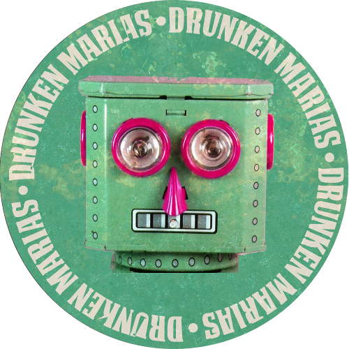

Drunken Marias zijn 2 DJ's die vanwege een tijdreisongeluk zijn teruggekomen naar het heden. Gelukkig hadden Jesse en Gerard nog de mogelijkheid om hun geliefde platenkoffers mee te mogen nemen. Bepakt met 60s en 70s jazz, funk, surf, beat, rock met exotische en psychedelische tintjes, maken zij de heupjes los.


-
2016
- 16/12 Odeon, Alkmaar (African music only)
- 26/11 Cayen, Enkhuizen (with Canshaker Pi)
- 25/11 Hal25, Alkmaar (with Feedback/Undercover Elephant/Surf Aid-Kit)
- 15/10 Cayen, Enkhuizen (with Indian Askin)
- 10/09 Victorie <3 Residents, Podium Victorie, Alkmaar
- 27/08 Midgetgolf Madness, Meppel
- 19/08 Halborrel, Hal 25, Alkmaar
- 01/07 Halborrel, Hal25, Alkmaar
- 24/06 Hard Bitten And The Others, Almere
- 03/06 Shuffle Live!, Alkmaar
- 15/05 Cafe Odeon, Alkmaar
- 13/05 Hal 2500 dagen, Hal25, Alkmaar
- 27/04 Cafe Odeon, Alkmaar
- 28/03 Kokende Karren, Hal25, Alkmaar
- 19/03 Cayen, Enkhuizen
-
2015
- 27/11 Hal25, Alkmaar
- 24/10 Alkmaars Koffiehuis, Alkmaar
- 30/08 Amsterdam Roest, Amsterdam
- 10/07 Alkmaars Koffiehuis, Alkmaar
- 05/06 Forever Young 2015, Grootebroek
- 22/05, 23/05 Karavaan festival, Alkmaar
- 16/05 Karavaan festival, Hoorn
-
2014
- 22/11 Amsterdam Roest, Amsterdam
- 08/11 Scenecs Filmfestival, Amersfoort